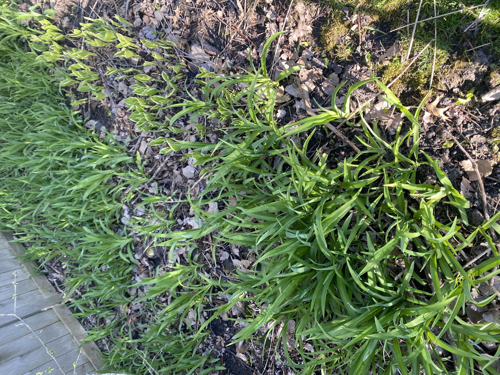

How it started: Removing invasive species

Most of my yard was a monoculture of invasive species, like these daylillies. I removed them all by hand to make room for much more interesting and beneficial plants.
When I first moved to Northbrook and finally had the yard space to begin my gardening journey, most of my yard consisted of invasive plant species including:
- Daylilies
- Buckthorn
- Amur and Tartarian Honeysuckle (eliminated!)
- Creeping charlie
- Garlic Mustard
- Rose of Sharon (eliminated!)
- Callery Pear (eliminated!)
- Burning Bush (eliminated!)
The early verison of the yard had very little insect life, and I never saw fireflies or butterflies stopping by. Not only was the yard boring to pollinators, but it was boring to me. These invasive species looked messy and were a pain to continously fight back in order to plant more attractive flowers. My dream of bringing in freshly cut flowers from my pollinator garden into my house was put on hold while I cut back thorny branches or dug out a million daylily tubers.